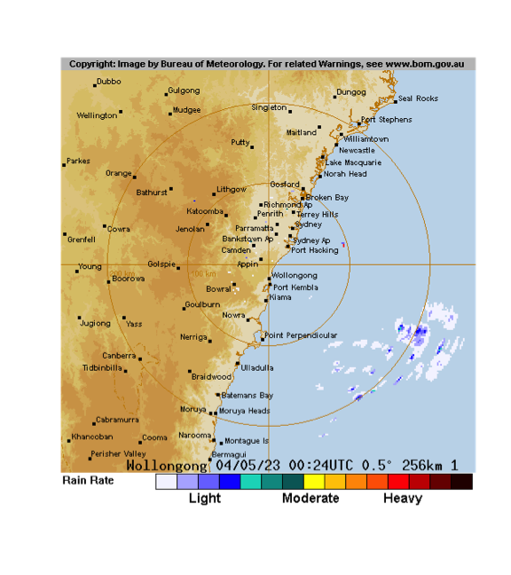

weatherOz
Rodrigo Pires, Anna Hepworth, Rebecca O’Leary, Jonathan Carroll, Dean Marchiori, Paul Melloy, Mark Padgham and Hugh Parsonage and Adam H. Sparks
weatherOz.RmdIntroduction
{weatherOz} provides automated downloading, parsing, cleaning, and
formatting of weather data for Australia through API endpoints provided
by the Department of Primary Industries and Regional Development (DPIRD)
of Western Australia, and by the Science and Technology Division of the
Queensland Government’s Department of Environment and Science (DES). As
well as Australian Government Bureau of Meteorology (‘BOM’) précis and
coastal forecasts, agriculture bulletin data, and downloading and
importing radar and satellite imagery files. DPIRD weather data are
accessed through public APIs provided by DPIRD, https://www.agric.wa.gov.au/weather-api-20, providing
access to weather station data from DPIRD’s own weather station network.
Australia-wide weather data are based on data from the Australian Bureau
of Meteorology (BOM) data and accessed through SILO (Scientific
Information for Land Owners) (Jeffery et al., 2001). BOM also serves
several types of data data as XML, JSON and SHTML files. This package
fetches these files, parses them and return a data frame. Satellite and
radar imagery files are also made available to the public via anonymous
FTP. {weatherOz} provides functionality to query, fetch and create
terra::SpatRaster() objects of the GeoTIFF imagery or a
magick object of radar image.png files.
Using {weatherOz}
Several functions are provided by {weatherOz} to retrieve Australian
Bureau of Meteorology (BOM) data. A family of functions retrieve weather
data and return data frames; * get_precis_forecast(), which
retrieves the précis (short) forecast; * get_ag_bulletin(),
which retrieves the agriculture bulletin; *
get_coastal_forecast(), which fetches coastal waters
forecasts for each state; and A second family of functions retrieve
information pertaining to satellite and radar imagery,
get_available_imagery() and the imagery itself,
_imagery() for satellite, and
get_available_radar() and get_radar_imagery()
for radar images. The last group functions provides internal
functionality for {weatherOz} itself;
update_forecast_towns(), which updates an internal database
of forecast locations distributed with the package,
update_ag_station_locations(), which updates an internal
database of the stations reporting ag bulletins and
find_forecast_towns() and find_nearby_stations()` which
returns either the closest forecast locations or the nearest weather
stations with an ag bulletin to a given point in Australia.
Using get_precis_forecast()
This function only takes one argument, state. The
state parameter allows the user to select the forecast for
just one state or a national forecast. States or territories are
specified using the official postal codes or full name with fuzzy
matching performed via agrep().
ACT - Australian Capital Territory
NSW - New South Wales
NT - Northern Territory
QLD - Queensland
SA - South Australia
TAS - Tasmania
VIC - Victoria
WA - Western Australia
AUS - Australia, returns national forecast including all states, NT and ACT.
Results
The function, get_precis_forecast(), will return a data
frame of the weather forecast for the daily forecast for selected towns.
See Appendix 1 for a full description of the fields and values.
Example
Following is an example fetching the forecast for Queensland.
(QLD_forecast <- get_precis_forecast(state = "QLD"))
#> ----------- Australian Bureau of Meteorology (BOM) Précis Forecast. -
#> The HTML version of Short Form (Précis) Forecast for
#> QLD can be found at:
#> <http://www.bom.gov.au/qld/forecasts/state.shtml>
#> Please note information at the page
#> <http://www.bom.gov.au/catalogue/data-feeds.shtml#precis>
#> --------------------------------------------------------------------------------
#> index product_id state town aac lat lon elev
#> 1: 0 IDQ11295 QLD Brisbane QLD_PT001 -27.48080 153.0389 8.1
#> 2: 1 IDQ11295 QLD Brisbane QLD_PT001 -27.48080 153.0389 8.1
#> 3: 2 IDQ11295 QLD Brisbane QLD_PT001 -27.48080 153.0389 8.1
#> 4: 3 IDQ11295 QLD Brisbane QLD_PT001 -27.48080 153.0389 8.1
#> 5: 4 IDQ11295 QLD Brisbane QLD_PT001 -27.48080 153.0389 8.1
#> ---
#> 787: 2 IDQ11295 QLD Port Douglas QLD_PT254 -16.48681 145.4635 70.4
#> 788: 3 IDQ11295 QLD Port Douglas QLD_PT254 -16.48681 145.4635 70.4
#> 789: 4 IDQ11295 QLD Port Douglas QLD_PT254 -16.48681 145.4635 70.4
#> 790: 5 IDQ11295 QLD Port Douglas QLD_PT254 -16.48681 145.4635 70.4
#> 791: 6 IDQ11295 QLD Port Douglas QLD_PT254 -16.48681 145.4635 70.4
#> start_time_local end_time_local utc_offset start_time_utc end_time_utc
#> 1: 2023-04-03 09:17:21 2023-04-04 10:00 2023-04-02 23:17:21 2023-04-03 14:00:00
#> 2: 2023-04-04 00:00:00 2023-04-05 10:00 2023-04-03 14:00:00 2023-04-04 14:00:00
#> 3: 2023-04-05 00:00:00 2023-04-06 10:00 2023-04-04 14:00:00 2023-04-05 14:00:00
#> 4: 2023-04-06 00:00:00 2023-04-07 10:00 2023-04-05 14:00:00 2023-04-06 14:00:00
#> 5: 2023-04-07 00:00:00 2023-04-08 10:00 2023-04-06 14:00:00 2023-04-07 14:00:00
#> ---
#> 787: 2023-04-05 00:00:00 2023-04-06 10:00 2023-04-04 14:00:00 2023-04-05 14:00:00
#> 788: 2023-04-06 00:00:00 2023-04-07 10:00 2023-04-05 14:00:00 2023-04-06 14:00:00
#> 789: 2023-04-07 00:00:00 2023-04-08 10:00 2023-04-06 14:00:00 2023-04-07 14:00:00
#> 790: 2023-04-08 00:00:00 2023-04-09 10:00 2023-04-07 14:00:00 2023-04-08 14:00:00
#> 791: 2023-04-09 00:00:00 2023-04-10 10:00 2023-04-08 14:00:00 2023-04-09 14:00:00
#> minimum_temperature maximum_temperature lower_precipitation_limit
#> 1: NA 27 0
#> 2: 19 26 0
#> 3: 18 29 NA
#> 4: 18 28 0
#> 5: 19 30 NA
#> ---
#> 787: 24 31 0
#> 788: 24 31 0
#> 789: 24 31 0
#> 790: 23 31 0
#> 791: 23 32 0
#> upper_precipitation_limit precis probability_of_precipitation
#> 1: 2 Possible afternoon shower. 40
#> 2: 7 Showers increasing. 80
#> 3: NA Mostly sunny. 20
#> 4: 1 Partly cloudy. 30
#> 5: NA Mostly sunny. 20
#> ---
#> 787: 3 Shower or two. 50
#> 788: 2 Shower or two. 50
#> 789: 1 Mostly sunny. 30
#> 790: 1 Mostly sunny. 30
#> 791: 1 Partly cloudy. 30Using get_ag_bulletin()
get_ag_bulletin() only takes one argument,
state. The state parameter allows the user to
select the bulletin for just one state or a national forecast. States or
territories are specified using the official postal codes or full name
with fuzzy matching performed via agrep().
NSW - New South Wales
NT - Northern Territory
QLD - Queensland
SA - South Australia
TAS - Tasmania
VIC - Victoria
WA - Western Australia
AUS - Australia, returns bulletin for all states and NT.
Results
The function, get_ag_bulletin(), will return a data
frame of the agriculture bulletin for selected stations. See Appendix 3
for a full list and description of the fields and values.
Example
Following is an example fetching the ag bulletin for Queensland.
(QLD_bulletin <- get_ag_bulletin(state = "QLD"))
#> ----------- Australian Bureau of Meteorology (BOM) Ag Bulletin. -----------
#> Please note information at the foot of:
#> <http://www.bom.gov.au/cgi-bin/wrap_fwo.pl?IDQ60604.html>
#> the HTML version of Agricultural Observations Bulletin for
#> QLD. Also see:
#> <http://www.bom.gov.au/catalogue/observations/about-agricultural.shtml>.
#> ----------------------------------------------------------------------------
#> product_id state dist name wmo site station
#> 1: IDQ60604 QLD 27 WEIPA AERO 94170 27045 Weipa
#> 2: IDQ60604 QLD 29 MOUNT ISA AERO 94332 29127 Mount Isa
#> 3: IDQ60604 QLD 30 GEORGETOWN AIRPORT 94274 30124 Georgetown Airport
#> 4: IDQ60604 QLD 31 CAIRNS AERO 94287 31011 Cairns
#> 5: IDQ60604 QLD 31 WALKAMIN RESEARCH STATION 95284 31108 Walkamin
#> ---
#> 26: IDQ60604 QLD 43 MITCHELL POST OFFICE 94514 43020 Mitchell
#> 27: IDQ60604 QLD 43 ROMA AIRPORT 94515 43091 Roma
#> 28: IDQ60604 QLD 43 ST GEORGE AIRPORT 94517 43109 St George
#> 29: IDQ60604 QLD 44 CHARLEVILLE AERO 94510 44021 Charleville
#> 30: IDQ60604 QLD 45 THARGOMINDAH AIRPORT 95492 45025 Thargomindah Airport
#> obs_time_local obs_time_utc time_zone lat lon elev bar_ht start
#> 1: 2023-04-03 09:00:00 2023-04-02 23:00:00 EST -12.6778 141.9208 18.0 18.6 1972
#> 2: 2023-04-03 09:00:00 2023-04-02 23:00:00 EST -20.6778 139.4875 340.3 341.0 1966
#> 3: 2023-04-03 09:00:00 2023-04-02 23:00:00 EST -18.3039 143.5306 301.8 302.5 2004
#> 4: 2023-04-03 09:00:00 2023-04-02 23:00:00 EST -16.8736 145.7458 2.2 2.6 1941
#> 5: 2023-04-03 09:00:00 2023-04-02 23:00:00 EST -17.1347 145.4281 594.0 NA 1965
#> ---
#> 26: 2023-04-03 09:00:00 2023-04-02 23:00:00 EST -26.4888 147.9777 336.5 338.0 1884
#> 27: 2023-04-03 09:00:00 2023-04-02 23:00:00 EST -26.5477 148.7710 307.4 307.8 1985
#> 28: 2023-04-03 09:00:00 2023-04-02 23:00:00 EST -28.0478 148.5957 198.5 199.1 1997
#> 29: 2023-04-03 09:00:00 2023-04-02 23:00:00 EST -26.4139 146.2558 301.6 303.3 1942
#> 30: 2023-04-03 09:00:00 2023-04-02 23:00:00 EST -27.9867 143.8150 130.9 131.4 1999
#> end r tn tx twd ev tg sn solr t5 t10 t20 t50 t1m wr
#> 1: 2023 0.0 25.1 33.6 3.3 NA NA NA 25.0 NA NA NA NA NA NA
#> 2: 2023 0.0 14.0 32.4 10.0 NA NA NA 21.5 NA NA NA NA NA NA
#> 3: 2023 0.0 17.9 35.7 5.8 NA NA NA 24.0 NA NA NA NA NA NA
#> 4: 2023 0.0 24.4 31.0 4.1 NA NA NA 22.7 NA NA NA NA NA NA
#> 5: 2023 6.2 20.2 32.0 2.1 3.7 20.5 NA 21.4 NA 25.3 26.0 NA NA 34
#> ---
#> 26: 2023 0.0 10.1 29.1 5.4 NA 10.1 NA 21.5 NA NA NA NA NA NA
#> 27: 2023 0.0 11.4 28.6 5.8 NA NA NA 21.6 22.9 20.2 22.2 23.7 -3.8 NA
#> 28: 2023 0.0 10.8 27.7 6.7 NA NA NA 20.9 22.6 22.7 24.2 26.8 29.0 NA
#> 29: 2023 0.0 12.3 28.7 9.2 NA NA NA 21.4 NA NA NA NA NA NA
#> 30: 2023 0.0 15.4 28.1 10.7 NA NA NA 20.9 NA NA NA NA NA NAUsing get_coastal_forecast()
This function only takes one argument, state. The
state parameter allows the user to select the forecast for
just one state or a national forecast. States or territories are
specified using the official postal codes or full name with fuzzy
matching performed via agrep()
ACT - Australian Capital Territory
NSW - New South Wales
NT - Northern Territory
QLD - Queensland
SA - South Australia
TAS - Tasmania
VIC - Victoria
WA - Western Australia
AUS - Australia, returns national forecast including all states, NT and ACT.
Results
The function, get_coastal_forecast(), will return a data
frame of the coastal waters forecast for marine zones in each state. See
Appendix 6 for a full description of the fields and values.
Example
Following is an example fetching the forecast for Queensland.
(QLD_coastal_forecast <- get_coastal_forecast(state = "QLD"))
#> ------- Australian Bureau of Meteorology (BOM) Coastal Waters Forecast. -------
#> Please note information at the foot of:
#> <http://www.bom.gov.au/cgi-bin/wrap_fwo.pl?IDQ11290.html>
#> the HTML version of Coastal Waters Forecast for
#> QLD.
#> Also see
#> <http://www.bom.gov.au/catalogue/observations/about-coastal-observations.shtml>.
#> --------------------------------------------------------------------------------
#> index product_id type state_code
#> 1: <NA> IDQ11290 <NA> QLD
#> 2: <NA> IDQ11290 <NA> QLD
#> 3: <NA> IDQ11290 <NA> QLD
#> 4: <NA> IDQ11290 <NA> QLD
#> 5: 0 IDQ11290 <NA> QLD
#> ---
#> 45: 1 IDQ11290 <NA> QLD
#> 46: 2 IDQ11290 <NA> QLD
#> 47: 0 IDQ11290 <NA> QLD
#> 48: 1 IDQ11290 <NA> QLD
#> 49: 2 IDQ11290 <NA> QLD
#> dist_name pt_1_name pt_2_name
#> 1: Queensland <NA> <NA>
#> 2: Queensland Gulf of Carpentaria <NA> <NA>
#> 3: North Queensland <NA> <NA>
#> 4: South Queensland <NA> <NA>
#> 5: South East Gulf of Carpentaria: QLD-NT Border to Cape Keerweer <NA> <NA>
#> ---
#> 45: Gold Coast Waters: Cape Moreton to Point Danger <NA> <NA>
#> 46: Gold Coast Waters: Cape Moreton to Point Danger <NA> <NA>
#> 47: Great Barrier Reef Offshore Waters <NA> <NA>
#> 48: Great Barrier Reef Offshore Waters <NA> <NA>
#> 49: Great Barrier Reef Offshore Waters <NA> <NA>
#> aac start_time_local end_time_local utc_offset start_time_utc
#> 1: QLD_FA001 2023-04-03 04:46:05 2023-04-03 04:46:05 10:00 2023-04-03 04:46:05
#> 2: QLD_FA002 2023-04-02 17:00:00 2023-04-02 17:00:00 10:00 2023-04-02 17:00:00
#> 3: QLD_FA003 2023-04-02 17:00:00 2023-04-02 17:00:00 10:00 2023-04-02 17:00:00
#> 4: QLD_FA004 2023-04-02 17:00:00 2023-04-02 17:00:00 10:00 2023-04-02 17:00:00
#> 5: QLD_MW001 2023-04-03 05:00:00 2023-04-03 05:00:00 10:00 2023-04-03 05:00:00
#> ---
#> 45: QLD_MW014 2023-04-04 00:00:00 2023-04-04 00:00:00 10:00 2023-04-04 00:00:00
#> 46: QLD_MW014 2023-04-05 00:00:00 2023-04-05 00:00:00 10:00 2023-04-05 00:00:00
#> 47: QLD_MW015 2023-04-03 05:00:00 2023-04-03 05:00:00 10:00 2023-04-03 05:00:00
#> 48: QLD_MW015 2023-04-04 00:00:00 2023-04-04 00:00:00 10:00 2023-04-04 00:00:00
#> 49: QLD_MW015 2023-04-05 00:00:00 2023-04-05 00:00:00 10:00 2023-04-05 00:00:00
#> end_time_utc
#> 1: 2023-04-03 04:46:05
#> 2: 2023-04-02 17:00:00
#> 3: 2023-04-02 17:00:00
#> 4: 2023-04-02 17:00:00
#> 5: 2023-04-03 05:00:00
#> ---
#> 45: 2023-04-04 00:00:00
#> 46: 2023-04-05 00:00:00
#> 47: 2023-04-03 05:00:00
#> 48: 2023-04-04 00:00:00
#> 49: 2023-04-05 00:00:00
#> forecast_seas
#> 1: <NA>
#> 2: <NA>
#> 3: <NA>
#> 4: <NA>
#> 5: Below 1 metre.
#> ---
#> 45: Around 1 metre.
#> 46: 1 to 1.5 metres, increasing to 1.5 to 2 metres offshore during the morning.
#> 47: Below 1 metre.
#> 48: Below 1 metre.
#> 49: Below 1 metre.
#> forecast_weather
#> 1: <NA>
#> 2: <NA>
#> 3: <NA>
#> 4: <NA>
#> 5: Sunny day. The chance of a thunderstorm north of Kowanyama late this afternoon and evening.
#> ---
#> 45: Cloudy. 95% chance of showers. The chance of a thunderstorm.
#> 46: Partly cloudy. 70% chance of showers.
#> 47: Cloudy. 95% chance of showers.
#> 48: Partly cloudy. 80% chance of showers. The chance of a thunderstorm.
#> 49: Mostly sunny.
#> forecast_winds
#> 1: <NA>
#> 2: <NA>
#> 3: <NA>
#> 4: <NA>
#> 5: Southeasterly 10 to 15 knots becoming variable about 10 knots in the evening.
#> ---
#> 45: East to southeasterly 10 to 15 knots turning southerly 15 to 20 knots during the morning and early afternoon.
#> 46: Southerly 15 to 25 knots.
#> 47: East to southeasterly 10 to 15 knots.
#> 48: East to southeasterly 10 to 15 knots becoming variable about 10 knots before dawn.
#> 49: South to southeasterly 10 to 15 knots tending east to southeasterly below 10 knots during the evening.
#> forecast_swell1
#> 1: <NA>
#> 2: <NA>
#> 3: <NA>
#> 4: <NA>
#> 5: <NA>
#> ---
#> 45: Easterly 1 to 1.5 metres, increasing to 1.5 to 2 metres during the morning, then tending southeasterly 2 to 2.5 metres during the afternoon.
#> 46: Southeasterly 2 metres, increasing to 2 to 3 metres during the morning.
#> 47: Southeasterly below 1 metre.
#> 48: Southeasterly around 1 metre.
#> 49: Southeasterly around 1 metre.
#> forecast_swell2 forecast_caution marine_forecast tropical_system_location
#> 1: <NA> <NA> <NA> NA
#> 2: <NA> <NA> <NA> NA
#> 3: <NA> <NA> <NA> NA
#> 4: <NA> <NA> <NA> NA
#> 5: <NA> <NA> <NA> NA
#> ---
#> 45: Southerly around 1 metre. <NA> <NA> NA
#> 46: <NA> <NA> <NA> NA
#> 47: <NA> <NA> <NA> NA
#> 48: <NA> <NA> <NA> NA
#> 49: <NA> <NA> <NA> NA
#> forecast_waves
#> 1: NA
#> 2: NA
#> 3: NA
#> 4: NA
#> 5: NA
#> ---
#> 45: NA
#> 46: NA
#> 47: NA
#> 48: NA
#> 49: NAUsing find_nearby_stations()
sweep_for_stations() only takes one argument,
latlon, a length-2 numeric vector. By default, this is
Canberra (approximately).
Results
This function will search for weather stations and return a data
frame of all weather stations (in this package) sorted by distance from
latlon, ascending. The fields in the data frame are:
name - station name
lat - latitude (decimal degrees)
lon - longitude (decimal degrees)
distance - distance from provided
latlon value (kilometres).
Example 1
Following is an example sweeping for stations starting with Canberra. Note that this code chunk is not executed due to the need of an API key. We get the station distances in this function from the DPIRD API so you will need to supply your own API key.
# Show only the first ten stations in the list
find_nearby_stations(
latitude = -35.4,
longitude = 149.2,
distance_km = 10,
api_key = YOUR_API_KEY
)Using find_forecast_towns()
find_forecast_towns() only takes one argument,
latlon, a length-2 numeric vector. By default, this is
Canberra (approximately).
Results
This function will search for weather stations and return a data
frame of all weather stations (in this package) sorted by distance from
latlon, ascending. The fields in the data frame are:
name - forecast town
lat - latitude (decimal degrees)
lon - longitude (decimal degrees)
distance - distance from provided
latlon value (kilometres).
Example
Following is an example sweeping for forecast towns starting with Canberra. As this function is executed locally using great circle distances, it doesn’t need an API key.
# Show only the first ten towns in the list
head(find_forecast_towns(latitude = -35.3, longitude = 149.2, distance_km = 10))
#> aac town lon lat elev distance
#> 1: NSW_PT027 Canberra 149.2003 -35.30880 577.6 0.9787094
#> 2: NSW_PT235 Queanbeyan 149.2346 -35.34850 612.0 6.2389373
#> 3: NSW_PT329 Portable RFSACT03 149.3162 -35.31110 719.0 10.6153185
#> 4: NSW_PT281 Woden Valley 149.0845 -35.34844 610.0 11.7771502
#> 5: NSW_PT254 Belconnen 149.0677 -35.23538 570.0 13.9952635
#> 6: NSW_PT267 Gungahlin 149.1376 -35.18473 621.5 14.0125549Using the update functions
{weatherOz} uses internal databases of station location data from BOM to provide location and other metadata, e.g. elevation, station names, WMO codes, etc. to make the process of querying for weather data faster. These databases are created and packaged with {weatherOz} for distribution and are updated with new releases. Users have the option of updating these databases after installing {weatherOz}. While this option gives the users the ability to keep the databases up-to-date and gives {weatherOz}’s authors flexibility in maintaining it, this also means that reproducibility may be affected since the same version of {weatherOz} may have different databases on different machines. If reproducibility is necessary, care should be taken to ensure that the version of the databases is the same across different machines.
The databases consist of three files, used by {weatherOz},
AAC_codes.rda,
JSONurl_latlon_by_station_name.rda and
stations_site_list.rda. These files can be located on your
local system by using the following command,
unless you have specified another location for library installations
and installed {weatherOz} there, in which case it would still be in
weatherOz/extdata.
Using update_forecast_towns()
update_forecast_towns() downloads the latest précis
forecast locations from the BOM server and updates {weatherOz}’s
internal database of towns used for forecast locations. This database is
distributed with the package to make the process faster when fetching
the forecast.
Using update_station_locations
update_station_locations() downloads the latest station
locations and metadata and updates {weatherOz}’s internal databases that
support the use of get_current_weather() and
get_ag_bulletin(). There is no need to use this unless you
know that a station exists in BOM’s database that is not available in
the databases distributed with {weatherOz}.
Using {weatherOz} to retrieve satellite imagery
{weatherOz} provides functionality to retrieve high-definition GeoTIFF satellite imagery provided by BOM through public FTP with the following types of imagery being available: i.) Infrared images, ii.) Visible images and iii.) Clouds/surface composite.
Valid BOM satellite Product IDs for GeoTIFF files include:
| Product ID | Description | Type | Delete time |
|---|---|---|---|
| IDE00420 | AHI cloud cover only 2km FD GEOS | Satellite | 24 |
| IDE00421 | AHI IR (Ch13) greyscale 2km FD GEOS | Satellite | 24 |
| IDE00422 | AHI VIS (Ch3) greyscale 2km FD GEOS | Satellite | 24 |
| IDE00423 | AHI IR (Ch13) Zehr 2km FD GEOS | Satellite | 24 |
| IDE00425 | AHI VIS (true colour) / IR (Ch13 greyscale) composite 1km FD GEOS | Satellite | 24 |
| IDE00426 | AHI VIS (true colour) / IR (Ch13 greyscale) composite 2km FD GEOS | Satellite | 24 |
| IDE00427 | AHI WV (Ch8) 2km FD GEOS | Satellite | 24 |
| IDE00430 | AHI cloud cover only 2km AUS equirect. | Satellite | 24 |
| IDE00431 | AHI IR (Ch13) greyscale 2km AUS equirect. | Satellite | 24 |
| IDE00432 | AHI VIS (Ch3) greyscale 2km AUS equirect. | Satellite | 24 |
| IDE00433 | AHI IR (Ch13) Zehr 2km AUS equirect. | Satellite | 24 |
| IDE00435 | AHI VIS (true colour) / IR (Ch13 greyscale) composite 1km AUS equirect. | Satellite | 24 |
| IDE00436 | AHI VIS (true colour) / IR (Ch13 greyscale) composite 2km AUS equirect. | Satellite | 24 |
| IDE00437 | AHI WV (Ch8) 2km AUS equirect. | Satellite | 24 |
| IDE00439 | AHI VIS (Ch3) greyscale 0.5km AUS equirect. | Satellite | 24 |
| Information gathered from Australian Bureau of Meteorology (BOM) | |||
Using get_available_imagery()
get_available_imagery() only takes one argument,
product_id, a BOM identifier for the imagery that you wish
to check for available imagery. Using this function will fetch a listing
of BOM GeoTIFF satellite imagery from ftp://ftp.bom.gov.au/anon/gen/gms/
to display which files are currently available for download. These files
are available at ten minute update frequency with a 24 hour delete time.
This function can be used see the most recent files available and then
specify in the _imagery() function. If no valid Product ID
is supplied, defaults to all GeoTIFF images currently available.
(avail <- get_available_imagery(product_id = "IDE00425"))
#>
#> The following files are currently available for download:
#> [1] "IDE00425.202304020110.tif" "IDE00425.202304020120.tif" "IDE00425.202304020130.tif"
#> [4] "IDE00425.202304020140.tif" "IDE00425.202304020150.tif" "IDE00425.202304020200.tif"
#> [7] "IDE00425.202304020210.tif" "IDE00425.202304020220.tif" "IDE00425.202304020230.tif"
#> [10] "IDE00425.202304020250.tif" "IDE00425.202304020300.tif" "IDE00425.202304020310.tif"
#> [13] "IDE00425.202304020320.tif" "IDE00425.202304020330.tif" "IDE00425.202304020340.tif"
#> [16] "IDE00425.202304020350.tif" "IDE00425.202304020400.tif" "IDE00425.202304020410.tif"
#> [19] "IDE00425.202304020420.tif" "IDE00425.202304020430.tif" "IDE00425.202304020440.tif"
#> [22] "IDE00425.202304020450.tif" "IDE00425.202304020500.tif" "IDE00425.202304020510.tif"
#> [25] "IDE00425.202304020520.tif" "IDE00425.202304020530.tif" "IDE00425.202304020540.tif"
#> [28] "IDE00425.202304020550.tif" "IDE00425.202304020600.tif" "IDE00425.202304020610.tif"
#> [31] "IDE00425.202304020620.tif" "IDE00425.202304020630.tif" "IDE00425.202304020640.tif"
#> [34] "IDE00425.202304020650.tif" "IDE00425.202304020700.tif" "IDE00425.202304020710.tif"
#> [37] "IDE00425.202304020720.tif" "IDE00425.202304020730.tif" "IDE00425.202304020740.tif"
#> [40] "IDE00425.202304020750.tif" "IDE00425.202304020800.tif" "IDE00425.202304020810.tif"
#> [43] "IDE00425.202304020820.tif" "IDE00425.202304020830.tif" "IDE00425.202304020840.tif"
#> [46] "IDE00425.202304020850.tif" "IDE00425.202304020900.tif" "IDE00425.202304020910.tif"
#> [49] "IDE00425.202304020920.tif" "IDE00425.202304020930.tif" "IDE00425.202304020940.tif"
#> [52] "IDE00425.202304020950.tif" "IDE00425.202304021000.tif" "IDE00425.202304021010.tif"
#> [55] "IDE00425.202304021020.tif" "IDE00425.202304021030.tif" "IDE00425.202304021040.tif"
#> [58] "IDE00425.202304021050.tif" "IDE00425.202304021100.tif" "IDE00425.202304021110.tif"
#> [61] "IDE00425.202304021120.tif" "IDE00425.202304021130.tif" "IDE00425.202304021140.tif"
#> [64] "IDE00425.202304021150.tif" "IDE00425.202304021200.tif" "IDE00425.202304021210.tif"
#> [67] "IDE00425.202304021220.tif" "IDE00425.202304021230.tif" "IDE00425.202304021240.tif"
#> [70] "IDE00425.202304021250.tif" "IDE00425.202304021300.tif" "IDE00425.202304021310.tif"
#> [73] "IDE00425.202304021320.tif" "IDE00425.202304021330.tif" "IDE00425.202304021340.tif"
#> [76] "IDE00425.202304021350.tif" "IDE00425.202304021400.tif" "IDE00425.202304021410.tif"
#> [79] "IDE00425.202304021420.tif" "IDE00425.202304021430.tif" "IDE00425.202304021450.tif"
#> [82] "IDE00425.202304021500.tif" "IDE00425.202304021510.tif" "IDE00425.202304021520.tif"
#> [85] "IDE00425.202304021530.tif" "IDE00425.202304021540.tif" "IDE00425.202304021550.tif"
#> [88] "IDE00425.202304021600.tif" "IDE00425.202304021610.tif" "IDE00425.202304021620.tif"
#> [91] "IDE00425.202304021630.tif" "IDE00425.202304021640.tif" "IDE00425.202304021650.tif"
#> [94] "IDE00425.202304021700.tif" "IDE00425.202304021710.tif" "IDE00425.202304021720.tif"
#> [97] "IDE00425.202304021730.tif" "IDE00425.202304021740.tif" "IDE00425.202304021750.tif"
#> [100] "IDE00425.202304021800.tif" "IDE00425.202304021810.tif" "IDE00425.202304021820.tif"
#> [103] "IDE00425.202304021830.tif" "IDE00425.202304021840.tif" "IDE00425.202304021850.tif"
#> [106] "IDE00425.202304021900.tif" "IDE00425.202304021910.tif" "IDE00425.202304021920.tif"
#> [109] "IDE00425.202304021930.tif" "IDE00425.202304021940.tif" "IDE00425.202304021950.tif"
#> [112] "IDE00425.202304022000.tif" "IDE00425.202304022010.tif" "IDE00425.202304022020.tif"
#> [115] "IDE00425.202304022030.tif" "IDE00425.202304022040.tif" "IDE00425.202304022050.tif"
#> [118] "IDE00425.202304022100.tif" "IDE00425.202304022110.tif" "IDE00425.202304022120.tif"
#> [121] "IDE00425.202304022130.tif" "IDE00425.202304022140.tif" "IDE00425.202304022150.tif"
#> [124] "IDE00425.202304022200.tif" "IDE00425.202304022210.tif" "IDE00425.202304022220.tif"
#> [127] "IDE00425.202304022230.tif" "IDE00425.202304022240.tif" "IDE00425.202304022250.tif"
#> [130] "IDE00425.202304022300.tif" "IDE00425.202304022310.tif" "IDE00425.202304022320.tif"
#> [133] "IDE00425.202304022330.tif" "IDE00425.202304022340.tif" "IDE00425.202304022350.tif"
#> [136] "IDE00425.202304030000.tif" "IDE00425.202304030010.tif" "IDE00425.202304030020.tif"
#> [139] "IDE00425.202304030030.tif" "IDE00425.202304030040.tif" "IDE00425.202304030050.tif"
#> [142] "IDE00425.202304030100.tif" "IDE00425.202304030110.tif" "IDE00425.202304030120.tif"
#> [145] "IDE00425.202304030130.tif"
#> [1] "IDE00425.202304020110.tif" "IDE00425.202304020120.tif" "IDE00425.202304020130.tif"
#> [4] "IDE00425.202304020140.tif" "IDE00425.202304020150.tif" "IDE00425.202304020200.tif"
#> [7] "IDE00425.202304020210.tif" "IDE00425.202304020220.tif" "IDE00425.202304020230.tif"
#> [10] "IDE00425.202304020250.tif" "IDE00425.202304020300.tif" "IDE00425.202304020310.tif"
#> [13] "IDE00425.202304020320.tif" "IDE00425.202304020330.tif" "IDE00425.202304020340.tif"
#> [16] "IDE00425.202304020350.tif" "IDE00425.202304020400.tif" "IDE00425.202304020410.tif"
#> [19] "IDE00425.202304020420.tif" "IDE00425.202304020430.tif" "IDE00425.202304020440.tif"
#> [22] "IDE00425.202304020450.tif" "IDE00425.202304020500.tif" "IDE00425.202304020510.tif"
#> [25] "IDE00425.202304020520.tif" "IDE00425.202304020530.tif" "IDE00425.202304020540.tif"
#> [28] "IDE00425.202304020550.tif" "IDE00425.202304020600.tif" "IDE00425.202304020610.tif"
#> [31] "IDE00425.202304020620.tif" "IDE00425.202304020630.tif" "IDE00425.202304020640.tif"
#> [34] "IDE00425.202304020650.tif" "IDE00425.202304020700.tif" "IDE00425.202304020710.tif"
#> [37] "IDE00425.202304020720.tif" "IDE00425.202304020730.tif" "IDE00425.202304020740.tif"
#> [40] "IDE00425.202304020750.tif" "IDE00425.202304020800.tif" "IDE00425.202304020810.tif"
#> [43] "IDE00425.202304020820.tif" "IDE00425.202304020830.tif" "IDE00425.202304020840.tif"
#> [46] "IDE00425.202304020850.tif" "IDE00425.202304020900.tif" "IDE00425.202304020910.tif"
#> [49] "IDE00425.202304020920.tif" "IDE00425.202304020930.tif" "IDE00425.202304020940.tif"
#> [52] "IDE00425.202304020950.tif" "IDE00425.202304021000.tif" "IDE00425.202304021010.tif"
#> [55] "IDE00425.202304021020.tif" "IDE00425.202304021030.tif" "IDE00425.202304021040.tif"
#> [58] "IDE00425.202304021050.tif" "IDE00425.202304021100.tif" "IDE00425.202304021110.tif"
#> [61] "IDE00425.202304021120.tif" "IDE00425.202304021130.tif" "IDE00425.202304021140.tif"
#> [64] "IDE00425.202304021150.tif" "IDE00425.202304021200.tif" "IDE00425.202304021210.tif"
#> [67] "IDE00425.202304021220.tif" "IDE00425.202304021230.tif" "IDE00425.202304021240.tif"
#> [70] "IDE00425.202304021250.tif" "IDE00425.202304021300.tif" "IDE00425.202304021310.tif"
#> [73] "IDE00425.202304021320.tif" "IDE00425.202304021330.tif" "IDE00425.202304021340.tif"
#> [76] "IDE00425.202304021350.tif" "IDE00425.202304021400.tif" "IDE00425.202304021410.tif"
#> [79] "IDE00425.202304021420.tif" "IDE00425.202304021430.tif" "IDE00425.202304021450.tif"
#> [82] "IDE00425.202304021500.tif" "IDE00425.202304021510.tif" "IDE00425.202304021520.tif"
#> [85] "IDE00425.202304021530.tif" "IDE00425.202304021540.tif" "IDE00425.202304021550.tif"
#> [88] "IDE00425.202304021600.tif" "IDE00425.202304021610.tif" "IDE00425.202304021620.tif"
#> [91] "IDE00425.202304021630.tif" "IDE00425.202304021640.tif" "IDE00425.202304021650.tif"
#> [94] "IDE00425.202304021700.tif" "IDE00425.202304021710.tif" "IDE00425.202304021720.tif"
#> [97] "IDE00425.202304021730.tif" "IDE00425.202304021740.tif" "IDE00425.202304021750.tif"
#> [100] "IDE00425.202304021800.tif" "IDE00425.202304021810.tif" "IDE00425.202304021820.tif"
#> [103] "IDE00425.202304021830.tif" "IDE00425.202304021840.tif" "IDE00425.202304021850.tif"
#> [106] "IDE00425.202304021900.tif" "IDE00425.202304021910.tif" "IDE00425.202304021920.tif"
#> [109] "IDE00425.202304021930.tif" "IDE00425.202304021940.tif" "IDE00425.202304021950.tif"
#> [112] "IDE00425.202304022000.tif" "IDE00425.202304022010.tif" "IDE00425.202304022020.tif"
#> [115] "IDE00425.202304022030.tif" "IDE00425.202304022040.tif" "IDE00425.202304022050.tif"
#> [118] "IDE00425.202304022100.tif" "IDE00425.202304022110.tif" "IDE00425.202304022120.tif"
#> [121] "IDE00425.202304022130.tif" "IDE00425.202304022140.tif" "IDE00425.202304022150.tif"
#> [124] "IDE00425.202304022200.tif" "IDE00425.202304022210.tif" "IDE00425.202304022220.tif"
#> [127] "IDE00425.202304022230.tif" "IDE00425.202304022240.tif" "IDE00425.202304022250.tif"
#> [130] "IDE00425.202304022300.tif" "IDE00425.202304022310.tif" "IDE00425.202304022320.tif"
#> [133] "IDE00425.202304022330.tif" "IDE00425.202304022340.tif" "IDE00425.202304022350.tif"
#> [136] "IDE00425.202304030000.tif" "IDE00425.202304030010.tif" "IDE00425.202304030020.tif"
#> [139] "IDE00425.202304030030.tif" "IDE00425.202304030040.tif" "IDE00425.202304030050.tif"
#> [142] "IDE00425.202304030100.tif" "IDE00425.202304030110.tif" "IDE00425.202304030120.tif"
#> [145] "IDE00425.202304030130.tif"Using get_satellite_imagery()
get_satellite_imagery() fetches BOM satellite GeoTIFF
imagery, returning a SpatRaster object and takes two arguments. Files
are available at ten minute update frequency with a 24 hour delete time.
It is suggested to check file availability first by using
get_available_imagery(). The arguments are:
product_id, a character value of the BOM product ID to download. Alternatively, a vector of values fromget_available_imagery()may be used here. This argument is mandatory.scansa numeric value for the number of scans to download, starting with the most recent and progressing backwards, e.g.,1- the most recent single scan available ,6- the most recent hour available,12- the most recent 2 hours available, etc. Negating will return the oldest files first. Defaults to 1. This argument is optional.
# Specify product ID and scans
i <- get_satellite_imagery(product_id = "IDE00425", scans = 1)
# Same, but use "avail" from prior to specify images for download
i <- get_satellite_imagery(product_id = avail, scans = 1)terra::plot() has been re-exported to simplify
visualising these files while using {weatherOz}.
plot(i)
Using {weatherOz} to retrieve radar imagery
{weatherOz} provides functionality to retrieve the latest radar imagery provided by BOM through public FTP. These are the latest snapshots for each radar locations at various radar ranges e.g., 512km, 256km, 128km and 64km for some stations.
Using get_available_radar()
get_available_radar() fetches the available radar
imagery from the BOM FTP and returns a data frame for reference. This
data frame contains the product_id, which is required when using the
get_radar_imagery() function. The files available are the
latest .png files of BOM radar imagery which are typically
updated each 6-10 minutes. Only the most recent image is retrieved for
each radar location. There are usually several radar ranges available
for each radar location, such as 512km, 256km, 128km and possibly 64km.
The arguments are:
-
radar_idwhich is the BOM radar ID number; this defaults to ‘all’ which will return a data frame of all radar IDs in Australia.
x <- get_available_radar()
head(x)
#> product_id LocationID range Name Longitude Latitude Radar_id Full_Name
#> 1: IDR641 64 512km Adelaide 138.4689 -34.6169 64 Adelaide (Buckland Park)
#> 2: IDR642 64 256km Adelaide 138.4689 -34.6169 64 Adelaide (Buckland Park)
#> 3: IDR643 64 128km Adelaide 138.4689 -34.6169 64 Adelaide (Buckland Park)
#> 4: IDR644 64 64km Adelaide 138.4689 -34.6169 64 Adelaide (Buckland Park)
#> 5: IDR311 31 512km Albany 117.8163 -34.9418 31 Albany
#> 6: IDR312 31 256km Albany 117.8163 -34.9418 31 Albany
#> IDRnn0name IDRnn1name State Type Group_ Status Archive
#> 1: BuckPk BucklandPk SA Doppler Yes Public BuckPk
#> 2: BuckPk BucklandPk SA Doppler Yes Public BuckPk
#> 3: BuckPk BucklandPk SA Doppler Yes Public BuckPk
#> 4: BuckPk BucklandPk SA Doppler Yes Public BuckPk
#> 5: Albany Albany WA Doppler Yes Public Albany
#> 6: Albany Albany WA Doppler Yes Public AlbanyUsing get_radar_imagery()
get_radar_imagery() fetches the latest BOM radar imagery
for a given product ID. The files available are the latest
.png files of BOM radar imagery, which are typically
updated each 6-10 minutes. Only the most recent image is retrieved for
each radar location. There are usually several radar ranges available
for each radar location, such as 512km, 256km, 128km and possibly 64km.
The only argument is:
-
product_idthe BOM product_id associated with each radar imagery file. These can be obtained from theget_available_radar()function. This value must be specified and the function will accept only one at a time.
y <- get_radar_imagery(product_id = "IDR032")
#> file downloaded to:/var/folders/ch/8fqkzddj1kj_qb5ddfdd3p1w0000gn/T//RtmphYvVyx/file13d635b6420bb.png
plot(y)
References
Australian Bureau of Meteorology (BOM) Weather Data Services
Australian Bureau of Meteorology (BOM) FTP Public Products
Australian Bureau of Meteorology (BOM) Weather Data Services Agriculture Bulletins
Australian Bureau of Meteorology (BOM) Weather Data Services Observation of Rainfall
Australian Bureau of Meteorology (BOM) High-definition satellite images
Stephen J. Jeffrey, John O. Carter, Keith B. Moodie, Alan R. Beswick, Using spatial interpolation to construct a comprehensive archive of Australian climate data, Environmental Modelling & Software, Volume 16, Issue 4, 2001, pages 309-330, ISSN 1364-8152, DOI: 10.1016/S1364-8152(01)00008-1.
Appendix 1 - Output from get_precis_forecast()
The function, get_precis_forecast(), will return a data
frame of the 7 day short forecast with the following fields:
| Field Name | Description |
|---|---|
| index | Forecast index number, 0 = current day … 7 day |
| product_id | BOM Product ID from which the data are derived |
| state | State name (postal code abbreviation) |
| town | Town name for forecast location |
| aac | AMOC Area Code, e.g., WA_MW008, a unique identifier for each location |
| lat | Latitude of named location (decimal degrees) |
| lon | Longitude of named location (decimal degrees) |
| elev | Elevation of named location (metres) |
| start_time_local | Start of forecast date and time in local TZ |
| end_time_local | End of forecast date and time in local TZ |
| UTC_offset |
Hours offset from difference in hours and minutes from Coordinated
Universal Time (UTC) for start_time_local and
end_time_local
|
| start_time_utc | Start of forecast date and time in UTC |
| end_time_utc | End of forecast date and time in UTC |
| maximum_temperature | Maximum forecast temperature (degrees Celsius) |
| minimum_temperature | Minimum forecast temperature (degrees Celsius) |
| lower_precipitation_limit | Lower forecast precipitation limit (millimetres) |
| upper_precipitation_limit | Upper forecast precipitation limit (millimetres) |
| precis | Précis forecast (a short summary, less than 30 characters) |
| probability_of_precipitation | Probability of precipitation (percent) |
Appendix 2 - Output from get_ag_bulletin()
The function, get_ag_bulletin(), will return a data
frame of the agriculture bulletin with the following fields:
| Field Name | Description |
|---|---|
| product_id | BOM Product ID from which the data are derived |
| state | State name (postal code abbreviation) |
| dist | BOM rainfall district |
| name | Full station name (some stations have been retired so “station” will be same, this is the full designation |
| wmo | World Meteorological Organization number (unique ID used worldwide) |
| site | Unique BOM identifier for each station |
| station | Station name |
| obs-time-local | Observation time |
| obs-time-utc | Observation time (time in UTC) |
| time-zone | Time zone for observation |
| lat | Latitude (decimal degrees) |
| lon | Longitude (decimal degrees) |
| elev_m | Station elevation (metres) |
| bar_ht | Bar height (metres) |
| station | BOM station name |
| start | Year data collection starts |
| end | Year data collection ends (will always be current) |
| r | Rain to 9am (millimetres). Trace will be reported as 0.01 |
| tn | Minimum temperature (degrees Celsius) |
| tx | Maximum temperature (degrees Celsius) |
| twd | Wet bulb depression (degrees Celsius) |
| ev | Evaporation (millimetres) |
| tg | Terrestrial minimum temperature (degrees Celsius) |
| sn | Sunshine (hours) |
| solr | Solar Radiation MJ/sq m |
| t5 | 5cm soil temperature (degrees Celsius) |
| t10 | 10cm soil temperature (degrees Celsius) |
| t20 | 20cm soil temperature (degrees Celsius) |
| t50 | 50cm soil temperature (degrees Celsius) |
| t1m | 1m soil temperature (degrees Celsius) |
| wr | Wind run (kilometres) |
Appendix 3 - Output from get_weather_bulletin()
The function get_weather_bulletin() returns a data frame
of weather observations for 0900 or 1500 for a nominated state.
Observations differ between states, but contain some or all of the
following fields. All units are metric (temperatures in Celsius; wind
speeds in kilometres per hour; rainfall amounts in millimetres; pressure
in hectoPascals). “AWS” in a station name denotes observations from an
Automatic Weather Station.
| Field Name | Description |
|---|---|
| stations | Name of observing station |
| cld8ths |
Octas (eights) of cloud (0-8); NA indicates sky obscured
|
| wind_dir | Direction from which wind blows (16 compass directions, measured at height of 10m) |
| wind_speed_kmh | <td|
| temp / temp_c_dry/_terr | Ambient dry air temperature measured at height of 1.2 metres |
| temp_c_dew | Dew-point temperature measured at height of 1.2 metres |
| temp_c_max | Maximum temperature for last 24 hours (0900 bulletin) or 6 hours (1500 bulletin). |
| temp_c_min | Minimum temperature for last 24 hours (0900 bulletin only) |
| temp_c_gr | Wet bulb temperature measured at height of 1.2 metres |
| rhpercent | Relative humidity |
| barhpa / mslpresshpa | Barometric pressure |
| rain_mm |
Total rainfall since previous bulletin (NA denotes amount
less than 1mm)
|
| days | If present, denotes number of days since previous bulletin |
| weather | Description of current weather |
| seastate (QLD only) | See below for description |
Seastate is described by a text string formed from the three components of (sea state, swell, direction). Sea state is denoted “C” (Calm), “SM” (Smooth), “SL” (Slight), “M” (Moderate), “R” (Rough), “VR” (Very Rough), “H” (High), “VH” (Very High), or “PH” (Phenomenal). Swell is denoted “LS” (Low Short), “LA” (Low Average), “LL” (Low Long), “MS” (Moderate Short), “MA” (Mod Average), “ML” (Mod Long), “HS” (Heavy Short), “HA” (heavy Average), “HL” (Heavy Long), or “C” (Confused). Direction denotes direction from which the swell is coming.
Names of rainfall and temperature variables for some states include prefixes or suffixes defining the time period over which observations apply (for example, “temp_c_6hmax” for maximum temperature between 0980 and 1500, or “temp_c_9ammin” for minimum temperature observed at 9am yet included in 1500 bulletin).
Appendix 4 - Output from get_coastal_forecast()
The output of get_coastal_forecast() will return a data
frame with coastal waters forecast values of each area within the given
state with the following fields:
| Field Name | Description |
|---|---|
| index | Forecast index number. 0 = current day |
| product_id | BOM Product ID from which the data are derived |
| type | Forecast Region type e.g. Coastal |
| state_code | State name (postal code abbreviation) |
| dist_name | Name of forecast district |
| pt_1_name | Start of forecast district |
| pt_2_name | End of forecast district |
| aac | AMOC Area Code, e.g., WA_MW008, a unique identifier for each location |
| start_time_local | Start of forecast date and time in local TZ |
| end_time_local | End of forecast date and time in local TZ |
| UTC_offset |
Hours offset from difference in hours and minutes from Coordinated
Universal Time (UTC) for start_time_local and
end_time_local
|
| start_time_utc | Start of forecast date and time in UTC |
| end_time_utc | End of forecast date and time in UTC |
| forecast_seas | Forecast sea conditions |
| forecast_weather | Forecast weather summary |
| forecast_winds | Forecast winds summary |
| forecast_swell1 | Forecast primary swell summary |
| forecast_swell2 | Forecast seondary swell summary (not always provided) |
| forecast_caution | Forecast caution issued (not always provided) |
| marine_forecast | Additional marine forecast warning information (not always provided) |
Appendix 5 - Map of station locations
if (requireNamespace("ggplot2", quietly = TRUE) &&
requireNamespace("ggthemes", quietly = TRUE) &&
requireNamespace("maps", quietly = TRUE) &&
requireNamespace("mapproj", quietly = TRUE) &&
requireNamespace("gridExtra", quietly = TRUE) &&
requireNamespace("grid", quietly = TRUE)) {
library(ggplot2)
library(mapproj)
library(ggthemes)
library(maps)
library(data.table)
library(grid)
library(gridExtra)
load(system.file("extdata", "stations_site_list.rda", package = "weatherOz"))
setDT(stations_site_list)
Aust_stations <-
stations_site_list[(!(state %in% c("ANT", "null"))) & !grepl("VANUATU|HONIARA", name)]
Aust_map <- map_data("world", region = "Australia")
BOM_stations <- ggplot(Aust_stations, aes(x = lon, y = lat)) +
geom_polygon(data = Aust_map, aes(x = long, y = lat, group = group),
color = grey(0.7),
fill = NA) +
geom_point(color = "red",
size = 0.05) +
coord_map(ylim = c(-45, -5),
xlim = c(96, 167)) +
theme_map() +
labs(title = "BOM Station Locations",
subtitle = "Australia, outlying islands and buoys (excl. Antarctic stations)",
caption = "Data: Australia Bureau of Meteorology (BOM)\n
and NaturalEarthdata, http://naturalearthdata.com")
# Using the gridExtra and grid packages add a neatline to the map
grid.arrange(BOM_stations, ncol = 1)
grid.rect(width = 0.98,
height = 0.98,
gp = grid::gpar(lwd = 0.25,
col = "black",
fill = NA))
}